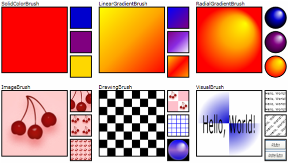
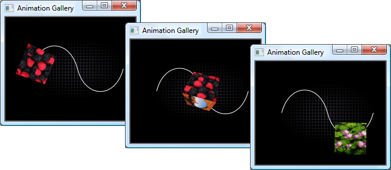

Графика и мультимедиа
Windows Presentation Foundation (WPF) обеспечивает поддержку мультимедиа, векторную графику, анимацию и композицию содержимого, что упрощает для разработчиков создание интересных пользовательских интерфейсов и содержимого. С помощью Microsoft Visual Studio можно создать векторную графику или сложную анимацию и интегрировать мультимедиа в приложения.
В этом разделе представлены возможности графики, анимации и мультимедиа в WPF, которые позволяют добавлять в приложения рисунки, эффекты перехода, звук и видео.
Note
Использование типов WPF в службе Windows настоятельно не рекомендуется. При попытке использовать типы WPF в службе Windows, службы могут не работать должным образом.
Новые графические и мультимедийные возможности в WPF 4
В части графики и анимации были сделаны некоторые изменения.
Округление макета
Когда граница объекта попадает в середину пикселя устройства, не зависящая от разрешения система графики может создавать артефакты отрисовки, например нечеткие или полупрозрачные границы. Предыдущие версии WPF для обработки таких случаев включали функцию привязки пикселей. В Silverlight 2 появилось округление макета, являющееся другим способом перемещения элементов так, чтобы границы попадали между пикселями. Теперь WPF поддерживает округление макета с помощью вложенного свойства зависимостей UseLayoutRounding элемента FrameworkElement.
Кэшированная композиция
С помощью новых классов BitmapCache и BitmapCacheBrush можно кэшировать сложные части визуального дерева как растровое изображение и значительно уменьшить время отрисовки. Растровое изображение продолжает реагировать на действия пользователя, например на щелчки мыши, и им можно рисовать на других элементах, как любой кистью.
Поддержка построителя текстур 3
WPF 4 строится на основе ShaderEffect реализованной в WPF 3.5 SP1, позволяя приложениям записывать эффекты с помощью построителя текстуры (PS) версии 3.0. Шейдерная модель PS 3.0 сложнее, чем PS 2.0, что позволяет реализовать гораздо больше эффектов на поддерживаемом оборудовании.
Функции плавности
Можно усовершенствовать анимацию с помощью функций плавности, которые обеспечивают дополнительный контроль над поведением анимации. Например, можно применить ElasticEase к анимации, чтобы придать анимации быстроту. Дополнительные сведения см. в описании типов пространства имен System.Windows.Media.Animation.
Графика и отрисовка
WPF включает поддержку двумерной графики высокого качества. Её возможности включают кисти, геометрические объекты, изображения, фигуры и преобразования. Дополнительные сведения см. в разделе Графика. Отрисовка графических элементов основана на классе Visual. Структура визуальных объектов на экране описывается визуальным деревом. Дополнительные сведения см. в разделе Общие сведения об отрисовке графики в WPF.
Двумерные фигуры
WPF предоставляет библиотеку часто используемых векторных двумерных фигур, таких как прямоугольники и эллипсы, которые показаны на следующем рисунке.
Эти встроенные фигуры WPF являются не просто фигурами: это программируемые элементы, в которых реализованы многие возможности, ожидаемые от наиболее распространенных элементов управления, включая ввод с помощью клавиатуры и мыши. В следующем примере показано, как обрабатывать событие MouseUp, возникающее при щелчке по Ellipse.
<Window
xmlns="http://schemas.microsoft.com/winfx/2006/xaml/presentation"
xmlns:x="http://schemas.microsoft.com/winfx/2006/xaml"
x:Class="Window1" >
<Ellipse Fill="LightBlue" MouseUp="ellipseButton_MouseUp" />
</Window>
public partial class Window1 : Window
{
void ellipseButton_MouseUp(object sender, MouseButtonEventArgs e)
{
MessageBox.Show("You clicked the ellipse!");
}
}
Partial Public Class Window1
Inherits Window
Private Sub ellipseButton_MouseUp(ByVal sender As Object, ByVal e As MouseButtonEventArgs)
MessageBox.Show("You clicked the ellipse!")
End Sub
End Class
На следующем рисунке показан результат выполнения приведенных выше разметки и кода.

Более подробную информацию см. в разделе Обзор фигур и базовых средств рисования в приложении WPF.
Двумерные геометрические объекты
Когда двухмерных фигур, предоставляемых WPF, недостаточно, можно использовать поддержку геометрии и путей WPF для создания собственных. Ниже показано, как можно использовать геометрические объекты для создания фигур (например, кисти рисования) и обрезки других элементов WPF.
Более подробную информацию см. в разделе Общие сведения о классе Geometry.
Двумерные эффекты
WPF предоставляет библиотеку классов, которые можно использовать для создания различных двухмерных эффектов. Возможности отрисовки в Двумерный для WPF позволяют рисовать элементы ИП, имеющие градиентные заливки, растровые изображения, рисунки и видео, а также управлять ими с помощью вращения, масштабирования и наклона. На следующем рисунке приведен пример многих эффектов, которых можно добиться с помощью кисти WPF.

Более подробную информацию см. в разделе Общие сведения о кистях WPF.
Трехмерная отрисовка
WPF предоставляет набор возможностей трехмерной отрисовки, которые интегрируются с поддержкой двухмерной графики в WPF для создания более интересного макета ИП и визуализации данных. С одной стороны, WPF позволяет отрисовывать двухмерные изображения на поверхностях трехмерных фигур, что показано на рисунке ниже.
Более подробную информацию см. в разделе Обзор трехмерной графики.
Анимация
Использование анимации позволяет применять к элементам управления и графическим элементам такие эффекты, как увеличение, дрожание, вращение и исчезание, создавать интересные эффекты смены страниц и другие эффекты. Поскольку WPF позволяет анимировать большинство свойств, можно анимировать не только большинство объектов WPF, но и использовать WPF для анимации пользовательских объектов.

Более подробную информацию см. в разделе Общие сведения об эффектах анимации.
Мультимедиа
К мультимедийным способам передачи информации и взаимодействия с пользователем относится использование изображений, видео и аудио.
Изображения
Изображения, которые включают значки, фоновые рисунки и даже части анимаций, являются одним из основных элементов большинства приложений. Так как с изображениями приходится работать часто, WPF предоставляет возможность работать с ними различными способами. На следующем рисунке показан один из таких способов.

Более подробную информацию см. в разделе Общие сведения об обработке изображений.
Видео и звук
Одна из основных особенностей графических возможностей WPF — встроенная поддержка работы с мультимедиа, что включает видео и аудио. Следующий пример демонстрирует вставку в приложение медиапроигрывателя.
<MediaElement Source="media\numbers.wmv" Width="450" Height="250" />
Класс MediaElement позволяет добавить в приложение воспроизводение видео и аудио. Дополнительные сведения см. в разделе Общие сведения о мультимедиа.
См. также
- System.Windows.Media
- System.Windows.Media.Animation
- System.Windows.Media.Media3D
- Двумерная графика и изображения
- Обзор фигур и базовых средств рисования в приложении WPF
- Общие сведения о закраске сплошным цветом и градиентом
- Рисование с помощью объектов Image, Drawing и Visual
- Разделы руководства по анимации и таймерам
- Обзор трехмерной графики
- Общие сведения о мультимедиа